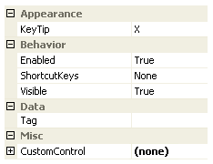

Ribbon Group Item CustomControl
Group Item CustomControl
You can add any control to be displayed in the ribbon by creating a placeholder for the control with this custom control item. Then inside the load event for the owning Form you can then associate the control instance with the place holder by assigning it to the CustomControl property. See the Ribbon Custom Controls sample for examples of this and the associated source code. Figure 1 shows the list of all properties exposed by the group custom control item.

Figure 1 - Group Item CustomControl Properties
KeyTip
When KeyTips are displayed this property defines the KeyTip for the custom control instance. You should ensure that all items inside a tab have unique KeyTip values so that the user can always select items using keyboard access.
Enabled
Used to define if the custom control is enabled or disabled at runtime.
ShortcutKeys
Define this property if you would like your application to have a shortcut key combination that sets focus to the custom control.
Visible
Use this property to specify if the custom control should be visible at runtime.
CustomControl
Assign to this property a reference to the actual control instance you would like displayed inside the ribbon. See the Ribbon Custom Controls sample for an example of this in action and also the source code of that sample to see the simple process of creating and assigning instances during the Form load event.
Tag
Associate application specific information with the object instance by using this property.